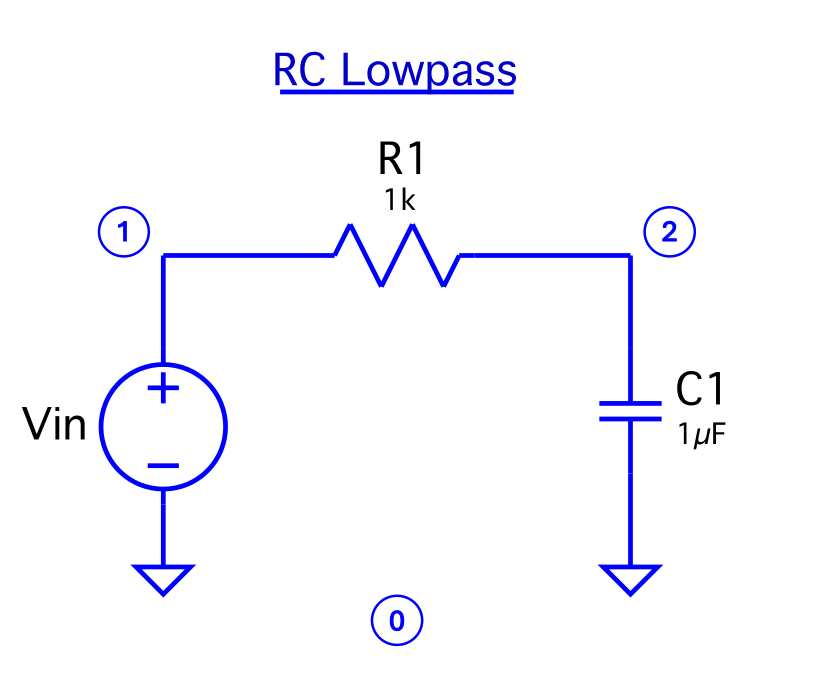

Analog Circuit Modeling
The information in this manual is subject to change without notice and does not reflect the commitment of Hack Audio, LLC. The software products and subsequent libraries described in this document are subject to a License Agreement and may not be copied without granted access. For information on purchasing our plug-ins, please visit the Products section of www.hackaudio.com.
The Point-To-Point™ SDK is a static C++ library with a complimentary MATLAB prototyping wrapper developed to make digital circuit modeling more accessible to the audio software developer community. This library combines the strengths of nodal and modified nodal analysis, state-space, and Discrete-Kirchoff (DK) methods to form a homogenized approach to accurate, real-time analog circuit modeling. Rather than generalizing a circuit’s characteristics, models are done at the component-level to allow for maximum customization options.
Typical restrictions within discrete models are the computationally expensive iterative solvers (e.g., Newton-Raphson method) often found in non-linear component models. To optimize these methods, novel techniques are used to achieve a generalized stability throughout circuit chains—especially those that use multiple non-linear component models. While local computer efficiency, however, is at the forefront of general software’s value, we oppose CPU-saving approximations as to maintain the integrity of the circuit model. As consumer electronics become more efficient, the ability to stay true to circuit architecture becomes more achievable.
We encourage all new users to visit www.hackaudio.com where you have access to our products and can keep up with any updates or additions to our software.
As this SDK is designed with audio developers in mind, the standard terminology for analog circuit components overlaps with the JUCE developer GUI vocabulary. Therefore, standard analog circuit components are hereby referred to as circuit elements.
Generic circuit elements currently available in the Point-To-Point™ library include:
The bipolar junction transistor (BJT) is available in NPN and PNP doping types for a wider application in audio schematics or custom designs.
Of the three available vacuum tubes, all are manufacturer variations of the ECC83 / A12X7 dual-triode vacuum tube. RSD1 and RSD2 are models of RSD valves and the EXH is a model of an Electro-Harmonix valve.
The following circuits are currently available in all languages with the same naming convention. Note that the labels used to group circuits together may vary in our sister plug-in—the Analog Circuit Factory.
Amplifier clipper circuits model the nonlinear distortion effects of tube amplifiers—and more specifically the preamplifier—where the input signal is effectively increased and distorted in some way. Historically copied from its use in classic Fender amps, the ECC83/12AX7 dual-triode vacuum tube has become the most common electrical component for boosting signal gain and is preferred by guitar enthusiasts over solid-state transistor alternatives to this day.
Similar to a console equalizer, amplifier tone stacks perform spectral filtering to alter the frequency response of an input signal. Circuit models that only include passive components (e.g., resistors and capacitors) only have the ability to reduce specific areas of the frequency spectrum while active filter circuits that use operational amplifiers (or sometimes diodes) have the capacity to boost spectral information.
For solid-state component models, germanium or silicon semiconductor types are available. The main differences between the two are the discretized modelling parameters based on the Ebers-Moll BJT/coupled-diodes model including the saturation current (based on the diode’s reverse biased current or the transistor’s base-emitter/base-collector saturation current) and the emission coefficient (also called the “ideality factor”) due to how close the diode is to its ideal form. For audio applications, the emission coefficient changes as the component degrades over time, satisfying the desire for the modeling of older hardware.
Equalizer circuits specifically refer to multiband filters. Baxandall equalizers are shelving filters characterized by a gentle slope transition. Because the Q factor is so gradual, the filter bandwidth often covers the entire input signal where the altered portion of the signal often flattens out beyond the sampling Nyquist rate. While two-band Baxandall equalizers have low and high shelves, three-band and four-band equalizers include low-resonance peaking filters. Baxandall filters that include a balance parameter have the ability to attenuate or boost the overall filter response gain by approximately ±4.5dBFS.
For equalizers with greater control, the Graphic 7 Bands preset is an active EQ with seven static frequency gain attenuators and a fixed resonance. The Parametric 4 Bands, Peaking 2 Bands, and Shelving 2 Bands presets are all parametric equalizers meaning they have both variable frequency and gain parameters.
The only passive circuit is the conjunctive bandpass filter, Low Pass High Pass, that lacks a peaking resonance parameter.
The Filter Circuits are comprised of single-banded filter types (e.g., low-pass, high-pass, bandpass, notch, peaking) that are either fixed frequency or have some kind of variable gain /resonance parameter. The State Variable (SV) filters are all derived from one base circuit. To extract specific filter types, a standard set of ratios between filter types is defined. A slight development of the SV filter, the Biquad filter, is characterized by its continuous-time transfer function which is a quadratic equation on both its numerator and denominator. The Biquad’s filters are also derived from a single circuit but have varying output types compared to the SV filter. Because of its optimal flat passband – characteristic of Butterworth filter topologies. It should be noted that the signal phase is inverted for the SV low-pass, SV high-pass, and Biquad bandpass.
These circuits include the tone sections and clipping sections of classic guitar pedals. Similar to the EQ Circuits and Filter Circuits, guitar pedals also offer passive and active filter schematics. The general architecture of a pedal—besides input/output stages, summing stages, or a power supply—is one characterizing tone stage and clipping stage as opposed to multiple gain stages in a guitar amplifier.
Lite circuits are static filtering circuits only available in the lite version of the library. They are included to showcase fixed-frequency emulations of Fliege, Sallen-Key, State-Variable, and Twin filters.
The necessary parameters of each circuit element—and its adjoining circuitry—should be maintained regardless of the programming language. The following tables outline those parameters in a recommended format:
| Description | Tag | Element content |
| Node 1 (input) | <node1> | [0,NNd] |
| Node 2 (output) | <node2> | [0,NNd] |
| Description | Tag | Element content |
| Voltage | <voltage> | Value in volts (V) |
| Node | <node> | [0,NNd] |
| Description | Tag | Element content |
| Resistance | <value> | Value in ohms (Ω) |
| Node 1 (input) | <node1> | [0,NNd] |
| Node 2 (output) | <node2> | [0,NNd] |
| Description | Tag | Element content |
| Parameter number | <parameterNumber> | [1,NVR] |
| Direction | <Direction> | PROPORTIONAL, INVPROPORTIONAL |
| Skew | <Skew> | LINEAR, LOG |
| Node 1 (input) | <node1> | [0,NNd] |
| Node 2 (output) | <node2> | [0,NNd] |
| Maxiumum resistance | <maxValue> | Value in ohms (Ω) |
| Initialization value | <InitValue> | Value in ohms (Ω) |
| Description | Tag | Element content |
| Parameter number | <parameterNumber> | [1,NVR] |
| Direction | <Direction> | PROPORTIONAL, INVPROPORTIONAL |
| Skew | <Skew> | LINEAR, LOG |
| Node 1 (input) | <node1> | [0,NNd] |
| Node 2 (divider) | <node2> | [0,NNd] |
| Node 3 (output) | <node3> | [0,NNd] |
| Maxiumum resistance | <maxValue> | Value in ohms (Ω) |
| Initialization value | <InitValue> | Value in ohms (Ω) |
| Description | Tag | Element content |
| Capacitance | <value> | Value in farads (F) |
| Node 1 (input) | <node1> | [0,NNd] |
| Node 2 (input) | <node2> | [0,NNd] |
| Description | Tag | Element content |
| Non-inverting node | <nonInvertingNode> | [0,NNd] |
| Inverting node | <invertingNode> | [0,NNd] |
| Output node | <outputNode> | [0,NNd] |
| Description | Tag | Element content |
| Node 1 (input) | <node1> | [0,NNd] |
| Node 2 (output) | <node2> | [0,NNd] |
| Semiconductor type | <Semiconductor> | SILICON, GERMANIUM |
| Configuration | <Configuration> | SINGLE, MATCHEDPAIR |
| Saturation current | <SaturationCurrent> | 1e-12 (silicon), 1e-6 (germanium) |
| Thermal voltage | <ThermalVoltage> | [0.026] |
| Emission coefficient | <EmissionCoeff> | [1,2] |
| Description | Tag | Element content |
| Base node | <nodeBase> | [0,NNd] |
| Collector node | <nodeCollector> | [0,NNd] |
| Emitter node | <nodeEmitter> | [0,NNd] |
| Semiconductor type | <Semiconductor> | SILICON, GERMANIUM |
| Doping type | <Doping> | NPN, PNP |
| Saturation current | <SaturationCurrent> | 1e-12 (silicon), 1e-6 (germanium) |
| Thermal voltage | <ThermalVoltage> | [0.026] |
| Emission coefficient | <EmissionCoeff> | [1,2] |
| Description | Tag | Element content |
| Grid node | <gridNode> | [0,NNd] |
| Anode | <nodeAnode> | [0,NNd] |
| Cathode | <nodeCathode> | [0,NNd] |
| Model | <Model> | RDS1, RSD2, EXH |
NNd = Total number of nodes in the circuit. The input value must be an integer. Node 0 denotes ground and can be used more than once.
NVR = Total number of variable resistor elements in the circuit. The input value must be an integer and greater than 0. Each value should be unique.
XML circuitry is the foundation for clean and efficient modeling in the Point-To-Point™ library featuring compatibility with the MATLAB prototyping library and the standard SDK’s C++ processors. Consider the most basic structure of an XML script:
<root>
<child>
<subchild> [...] </subchild>
</child>
</root>
The XML circuits follow standard XML syntax. Because each file should support Unicode, specify as such in the script's prolog. Additionally, set the root (or "parent") element for the script as a "PointToPointCircuit".
<?xml version="1.0" encoding="UTF-8"?>
<PointToPointCircuit>
[Our circuit definition will go here...]
</PointToPointCircuit>
Consider the following RC lowpass filter as an example for our custom XML script:
A circuit name and category are necessary to keep like circuits organized. Circuit categories are usually based on the medium for which the circuit is predominately used (e.g., guitar amplifiers or pedals, basic filters or equalizers, etc.) and any other pertinent subcategories (e.g., tone stack).
First define the preferred name and of what circuit family you want it to belong to. Inside a "Settings" tag, the total number of nodes and a digital DC blocker flag are instantiated. If you are using these circuits inside the Analog Circuit Factory plug-in, an additional output trim knob can be populated by adding an "Output" tag with its defaulting value [0,1]. In custom circuits, this can otherwise be replicated by a digital linear gain parameter on the output signal.
<Name>RCLPF</Name>
<Category>BasicFilters</Category>
<Settings>
<numNodes>3</numNodes>
<hasDCBlocker>false</hasDCBlocker>
</Settings>
Similar to our settings definition, our circuit elements are defined under specific element-specific tags. Elements can be added in no particular order with no limit. If one or more of an element is present in a circuit, each instance in the script should be enclosed by a parent tag (e.g., Rs, VarRs, Pots, Cs, Ds, OPAmps, BJTs, Tube12AX7s or Vs for voltage sources) and each individual element should enclose its parameters with a child tag (e.g., Resistor, VariableResistor, Potentiometer, Capacitor, Diode, OPAmp, Tube or VoltageSource). Variable resistors and potentiometers support a label class to organize your knobs. Voltage inputs and outputs only should exist once for a given circuit model, so a parent tag is not required.
When a component is wired to ground, you should always use Node #2 for the zero value.
<Elements>
<VoltageInput>
<node1>1</node1>
<node2>0</node2>
</VoltageInput>
<VoltageOutput>
<node1>2</node1>
<node2>0</node2>
</VoltageOutput>
<Rs>
<Resistor>
<value>1000</value>
<node1>1</node1>
<node2>2</node2>
</Resistor>
</Rs>
<Cs>
<Capacitor>
<value>10e-6</value>
<node1>2</node1>
<node2>0</node2>
</Capacitor>
</Cs>
</Elements>
For an XML template that supports all circuit elements, click here.
If you would rather store your circuit models as object-oriented classes, the Point-To-Point™ library's API supports self-containment to run without dependencies on imported circuits. The API is comprised of standard audio programming function calls, taking and returning generic data types that can easily be replaced or rewritten for JUCE integration.
Custom circuits are defined as a single class (often represented as one header file) with circuit parameters defined in the class constructor.
#include "Circuit.h"
class RCLPF : public Circuit
{
public:
RCLPF()
{
[Our circuit definition will go here...]
}
~RCLPF() {};
};
Taking from the settings paramteres in our XML circuit template, we will also define the position of our circuit elements all in one place. It is important that all pertinent elements are assigned to the layout object and that elements—no matter the amount—should be assigned as an std::vector. Additionally, elements are referenced from the CircuitElement namespace to ensure modeling functionality and compatibility within our circuit processors. The name of an individual element does not matter as long as it is assigned accordingly within the vector of respective CircuitElements in our layout object.
The CircuitModel class that our inherited Circuit class references is a hidden processor inside the SDK. Regardless, the CircuitLayout (instantiated as layout) contains members that can be assigned when constructing your custom circuit or customizing an existing one.
CircuitElement::Resistor R1 { [VALUE], [NODE1], [NODE2] };
CircuitElement::Resistor R2 { ... };
CircuitElement::Resistor R3 { ... };
// ...
layout.Rs = std::vector<CircuitElement::Resistor> { R1, R2, R3, ... };
CircuitElement::VariableResistor Vr1 { [VALUE],
CircuitElement::ParamDirection::[DIRECTION],
CircuitElement::Skew::[SKEW],
[NODE1],
[NODE2],
[INITVAL] }; // [0,1]
CircuitElement::VariableResistor Vr2 { ... };
// ...
layout.VarRs = std::vector<CircuitElement::VariableResistor> { Vr1, Vr2, ... };
CircuitElement::Potentiometer Pt1 { [VALUE],
CircuitElement::ParamDirection::[DIRECTION],
CircuitElement::Skew::[SKEW],
[NODE1],
[NODE2],
[NODE3],
[INITVAL] }; // [0,1]
CircuitElement::VariableResistor Pt2 { ... };
// ...
layout.Pots = std::vector<CircuitElement::Potentiometer> { Pt1, Pt2, ... };
CircuitElement::Capacitor C1 { [VALUE], [NODE1], [NODE2] };
CircuitElement::Capacitor C2 { ... };
CircuitElement::Capacitor C3 { ... };
// ...
layout.Rs = std::vector<CircuitElement::Resistor> { C1, C2, C3, ... };// ...
CircuitElement::OPAmp OP1 { [NONINVERTING_NODE], [INVERTING_NODE], [OUTPUT_NODE] };
CircuitElement::OPAmp OP2 { ... };
CircuitElement::OPAmp OP3 { ... };
// ...
layout.OPAmps = std::vector<CircuitElement::OPAmps> { OP1, OP2, OP3, ... };
CircuitElement::Diode D1 { CircuitElement::Diode::Semiconductor::[TYPE],
CircuitElement::Diode::Configuration::[CONFIG] };
CircuitElement::Diode D2 { ... };
CircuitElement::Diode D3 { ... };
// ...
layout.Ds = std::vector<CircuitElement::Diode> { D1, D2, D3, ... };
CircuitElement::BJT BJT1 { CircuitElement::BJT::Doping::[TYPE],
CircuitElement::BJT::Semiconductor::[TYPE],
[BASE_NODE],
[COLLECTOR_NODE],
[EMITTER_NODE] };
CircuitElement::Diode BJT2 { ... };
CircuitElement::Diode BJT3 { ... };
// ...
layout.BJTs = std::vector<CircuitElement::BJT> { BJT1, BJT2, BJT3, ... };
CircuitElement::Tube12AX7 TUBE1 { CircuitElement::Tube12AX7::[TYPE],
[GRID_NODE],
[ANODE],
[CATHODE] };
CircuitElement::Tube12AX7 TUBE2 { ... };
CircuitElement::Tube12AX7 TUBE3 { ... };
// ...
layout.Tube12AX7s = std::vector<CircuitElement::Tube12AX7> { TUBE1, TUBE2, TUBE3, ... };
The following functions belong to the Circuit class, meaning that these should be used in the main DSP processing of your circuit(s):
void process (const float* input, // buffer pointer float* output, // buffer pointer int numSamples, // buffer length int channel) // [0,1]
Block processor that takes and returns a pointer to separate respective buffers.
float processInPlace (float* buffer, // buffer pointer int numSamples, // buffer length int channel) // [0,1]
Block processor that takes and returns a pointer to the same buffer.
float processSample (float x, // sample by value int channel) // [0,1]
Per-sample processor that is not dependent on a fixed buffer. This is often implemented in a custom block processor similar to process or processInPlace. Note that all the above processor functions support two-channel non-interleaved processing.
void prepare (double sampleRate, // circuit sampling rate int bufferSize) // samples per buffer
Processor initializer that should be called before processing occurs. The JUCE framework utilizes the AudioProcessor's prepareToPlay function that is called per internal calls.
std::vector<double> setParameters (std::vector<double> parameters) // parameter array
General connection between your main processor's parameter states and the circuit's internal parameter states. As an alternative for larger systems, the JUCE framework supports the retrieval of raw parameter values (as atomic float pointers) insider the constructor of your circuit.
void setSamples4Smooth (int samples4Smooth) // smoothing ramp size
Sets smoothing time for all parameterized elements in a circuit. If you are wanting a specific millisecond ramp, consider replacing samples4Smooth with a basic conversion:
int samples4Smooth = targetMilliseconds / 1000 * sampleRate;
The inside of our RC lowpass class constructor should look as follows:
layout.numNodes = 2;
layout.Vin = CircuitElement::VoltageInput { 1, 0 };
layout.Vout = CircuitElement::VoltageOutput { 2, 0 };
CircuitElement::Resistor R { 4700.0, 1, 2 };
layout.Rs = std::vector<CircuitElement::Resistor> { R };
CircuitElement::Resistor C { 47e-9, 2, 0 };
layout.Cs = std::vector<CircuitElement::Capacitor> { C };
layout.hasDCBlocker = false; // if false, can be omitted
circuit = CircuitModel(layout);
The MATLAB version of the Point-To-Point™ library is a 1:1 functional recreation of the C++ library that introduces a testing script for rapid prototyping. Included in the test script is a waveform oscillator, frequency repsonse, total harmonic distortion (THD) plot, and a DC sweep analysis plot.
Object-oriented programming (OOP) in MATLAB
If you are interested in the characteristics of a circuit that has any kind of clipping, the waveform oscillator will compare a sine wave input to the output of the circuit. To find the harmonics created by a circuit, the THD plot introduces a high-frequency sine wave and converts the output to the frequency domain via the fast Fourier transform (FFT). The built-in FFT function from MATLAB labels our peaks with the appropriate harmonic numbers show only even, only odd, or a mixture of harmonics. Additionally, the noise floor of our signal can be measured in decibels (dB) by examining the noise-like black signal on the plot's bottom bound.
To analyze a filter circuit, plot the frequency response of a filter system via an impulse response (IR) that has been passed through your circuit. The IR length is defaulted to size N = 213 = 8192. The typical Cooley-Tukey radix-2 FFT algorithm requires the transform's input to be a power of 2 (POT), but because MATLAB uses MIT's FFTW (Fastest Fourier Transform in the West), NPOT values are still processed effectively. MATLAB offers the nextpow2 function to pad your impulse response input.
The test script can take either a MATLAB m-file circuit from the circuit template or an XML circuit. Depending on the circuit that you want to prototype, make sure the deprecated circuit is commented out.
For more about the Point-To-Point™ library, Hack Audio's founder Dr. Eric Tarr introduced the SDK at the 2022 Audio Developers Conference in London, England.
To see the library in action, check out the videos on the Analog Circuit Factory landing page where Dr. Eric Tarr and Hack Audio developer Tim Leete have demoed the plug-in.
Any relative information not directly used in the Point-To-Point SDK is elaborated here.
Defined by Ohm’s Law and used to support Kirchoff’s Voltage Law (KVL), the voltage drop is the total voltage lost over one analog component or the entire circuit due to conductor resistance. Conductor resistance is merely how much a conductive medium/material opposes the flow of electric current.
RSD was the rebranded name of the east-German tube manufacturer—Rundfunk- und Fernmelde-Technik (RFT)—who sold and relabeled to other well-known German manufacturers for resale such as Telefunken and Siemens.
Rundfunk- und Fernmelde-Technik translates to “broadcasting and telecommunications technology.”
Functionally, the digital DC blocker acts as a high-pass filter that attenuates near-zero values. In hardware circuits, capacitave coupling may introduce a DC component which, in the frequency domain, populates in the low frequencies—usually at zero. Multiple instances of these circuits can cause audio mixing imbalances as these signals compound.
Generally, the digital DC blocker subtracts the average of the signal over time. For example a square wave with peaking values of [-1,1] have a DC offset (or just offset) of 0.5.
[...]
[...]
[...]
[...]
[...]
[...]
[...]
[...]
[...]
[...]
[...]
[...]
[...]
[...]
[...]